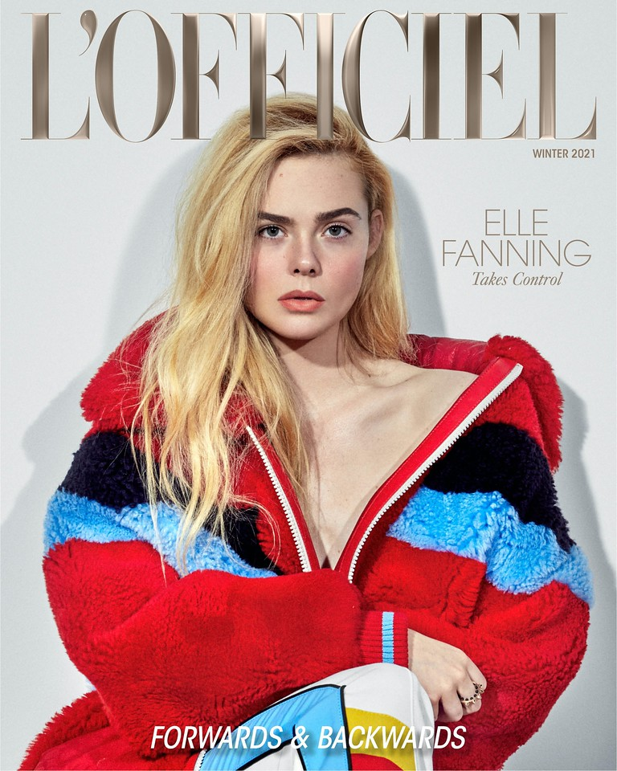
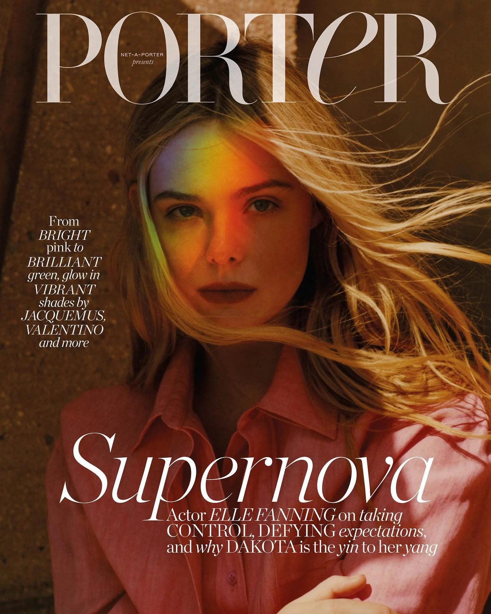
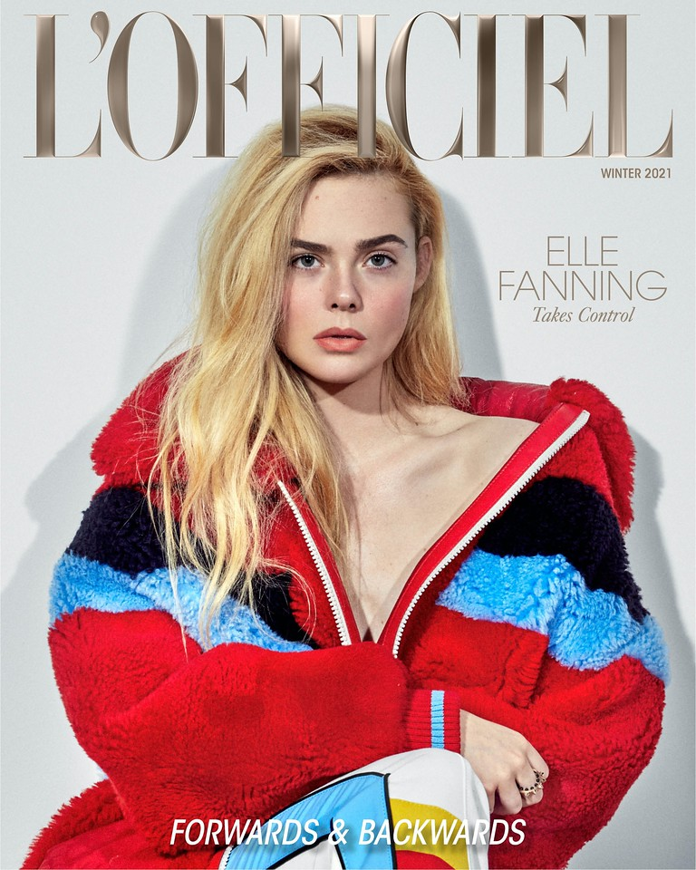
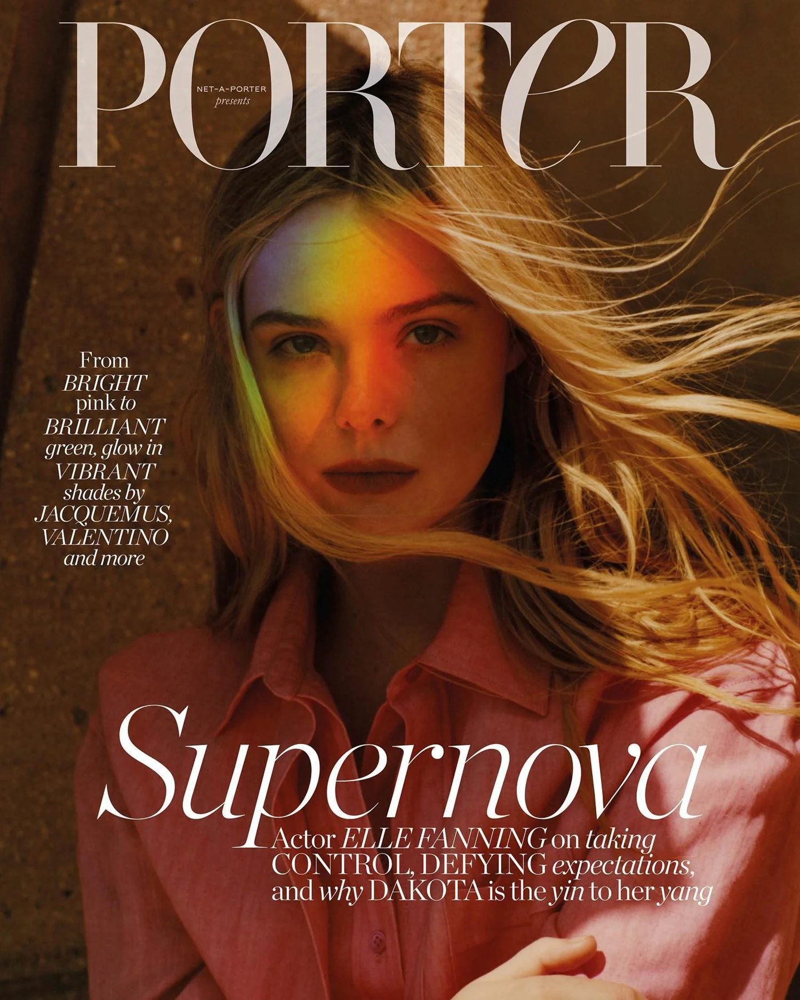

ELLE
FILM&TV
MAGAZINE
.jfif) 



ELLE
FANNING
Mary Elle Fanning was born on the 9th of April 1998 in Conyers, Georgia, USA, to Heather Joy (Arrington) and Steven J. Fanning. Her mother played professional tennis, and her father, now an electronics salesman, played minor league baseball.
Elle's ascent into stardom began when she was almost three years old, when she played the younger version of her sister, Dakota Fanning's, character Lucy in the drama film Uma Lição de Amor (2001).
She then played younger Dakota again in Taken (2002) as Allie, age 3. But her first big independent movie without her sister was in 2003's A Creche do Papai (2003) as Jamie.
Elle was becoming more successful and she got another role, in 2004's Provocação (2004) with Kim Basinger. Her career kept improving, as she had two movies in 2005, Meu Melhor Amigo (2005) and I Want Someone to Eat Cheese With (2006).
In 2008, she became known for her role in the film ‘Phoebe in Wonderland’. Directed by Daniel Barnz, the film starred Fanning in the lead role. It was screened at the 2008 Sundance Film Festival, after which it received a limited theatrical release.
Over the next few years, she played main roles as well as supporting roles in many movies. Some of them are ‘Ginger & Rosa’ (2012), ‘Low Down’ (2014), ‘Maleficent’ (2014), ‘Young Ones’ (2014), and ‘3 Generations’ (2015).
’Maleficent,’ a 2014 American dark fantasy film, which was directed by Robert Stromberg, starred Fanning in a significant role, along with actors Angelina Jolie, Sharlto Copley, Sam Riley and Imelda Staunton. The film was a huge commercial success and also received an Oscar nomination.
Her latest films include ‘The Neon Demon’ (2016), ‘How to Talk to Girls at Parties’ (2017), ‘The Beguiled’ (2017) and ‘All the Bright Places’ (2020).